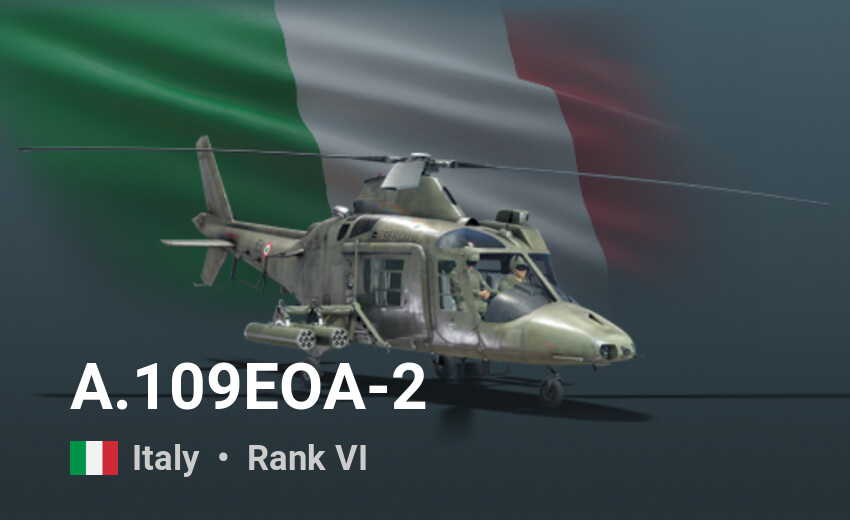
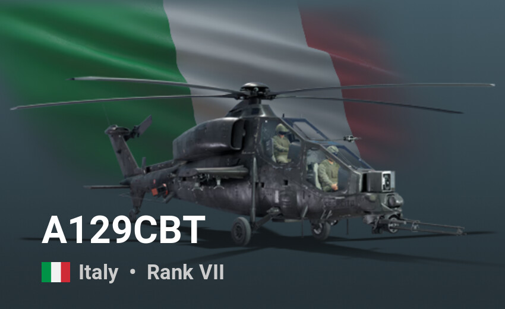

Agusta A109 – lekki śmigłowiec produkowany przez włoską firmę Leonardo Helicopters. Wykorzystywany w wielu krajach do przewozu pasażerów, w służbach państwowych, a szczególnie w transporcie medycznym.
Wersje:
- A109A: pierwsza seryjna wersja z dwoma silnikami Allison 250. Pierwszy lot odbył się 4 sierpnia 1971.
- A109A EOA "Hirundo": wersja wojskowa dla armii włoskiej.
- A109A Mk II: ulepszona wersja cywilna A109A.
- A109B: planowana, nigdy nie produkowana wersja wojskowa.
- A109C Hirundo: cywilna wersja 8 miejscowa z silnikami Allison 250-C20R-1.
- A109K: wersja wojskowa.
- A109K2: wersja dla policji i jednostek ratownictwa, przystosowana do pracy na dużych wysokościach i przy wysokich temperaturach.
- A109M: wersja wojskowa.
A109MAX: śmigłowiec do zadań ratowniczych.
- A109KM: wojskowa wersja K2.
- A109KN: wersja K2 dla marynarki.
- A109CM: normalna wersja wojskowa.
- A109GdiF: wersja specjalna dla włoskiego Korpusu Straży Skarbowej.
- A109 LUH (Light Utility Helicopter): lekki wielozadaniowy śmigłowiec wojskowy; sprzedawany do Afryki Południowej, Szwecji i Malezji.
- A109BA: wersja specjalna dla wojsk belgijskich.
- A109E Power: ulepszona cywilna wersja.
- A109E Power Elite: przedłużona i ulepszona cywilna wersja A109E Power
A109S Grand: przedłużona i ulepszona cywilna wersja z silnikami P&W 207. Maszyną tą dwaj Amerykanie: Scott Kasprowicz i Steve Sheik ustanowili w sierpniu 2008 roku nowy rekord świata w najszybszym okrążeniu Ziemi śmigłowcem. Dystans 38890 km pokonali ze średnią prędkością 275 km/h. Dotychczasowy rekord od 1996 należał do Bell 430
- A109S Grand Da-Vinci: wersja zoptymalizowana do zadań ratowniczych w warunkach wyskogórskich Szwajcarii (2 silniki Pratt&Whitney: po 815 KM, cena jednostkowa: 10,2 mln Franków szwajcarskich)
- A109 Grand New: rozbudowana wersja A109 Grand - 4 miejscowa wersja VIP i 6 miejscowa wersja standard. Przewidywano certyfikację w 2010 roku
- A109N: najnowsza wersja z elementami wersji LUH, Elite i Grand.
- Agusta A119 Koala: cywilna wersja A109 z jednym silnikiem.
- AW119Ke

Agusta A129 Mangusta (AW129) – śmigłowiec szturmowy produkowany przez włoską firmę Agusta, następnie AgustaWestland (obecnie część koncernu Leonardo S.p.A.). Jest to pierwszy śmigłowiec szturmowy zaprojektowany i produkowany całkowicie w Europie. Podstawową wersję opracowano w latach 80. XX wieku, jednakże nie cieszyła się ona dużą popularnością – trafiła tylko na wyposażenie włoskiej armii. Był to klasyczny niszczyciel czołgów, uzbrojony tylko w przeciwpancerne pociski kierowane (ppk). W latach 90. XX wieku zmodernizowano go, tworząc wariant z dodatkowym uzbrojeniem w postaci niekierowanych pocisków rakietowych i ruchomego działka z przodu. Jego rozwiązania zastosowano w modernizacji śmigłowców A129 należących do włoskiej armii. W drugiej połowie lat 90. opracowano także modernizację włoskich śmigłowców A129 Mangusta oznaczoną jako A129 CBT (A129 da Combattimento), opierającą się na części rozwiązań wersji International. Zachowano dotychczasowe silniki Rolls-Royce Gem 2 Mk.1004D, lecz zastosowano przekładnię główną o większej mocy wyjściowej i wymieniono wirnik główny na pięciołopatowy oraz wirnik ogonowy na nowy dwułopatowy o zwiększonej prędkości obrotu. Masa startowa wzrosła do 4600 kg[4]. Zamontowano trzylufowe działko M197 w ruchomym stanowisku OtoBreda TM197B z przodu kadłuba i aktywne oraz pasywne systemy samoobrony, a także zmodernizowano wyposażenie. Jako uzbrojenie główne pozostały pociski ppanc TOW-2A/B, a nadto wprowadzono wyrzutnie niekierowanych pocisków rakietowych kalibru 70 mm lub 81 mm i pociski powietrze-powietrze bliskiego zasięgu FIM-92 Stinger.